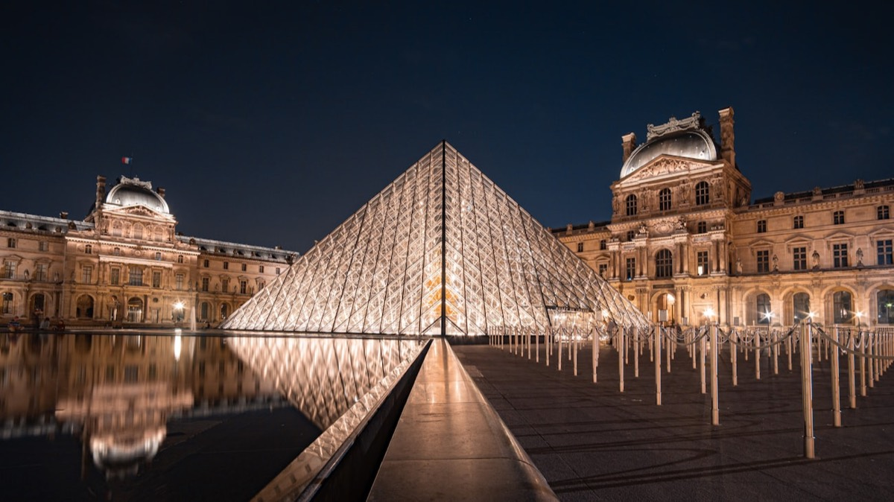
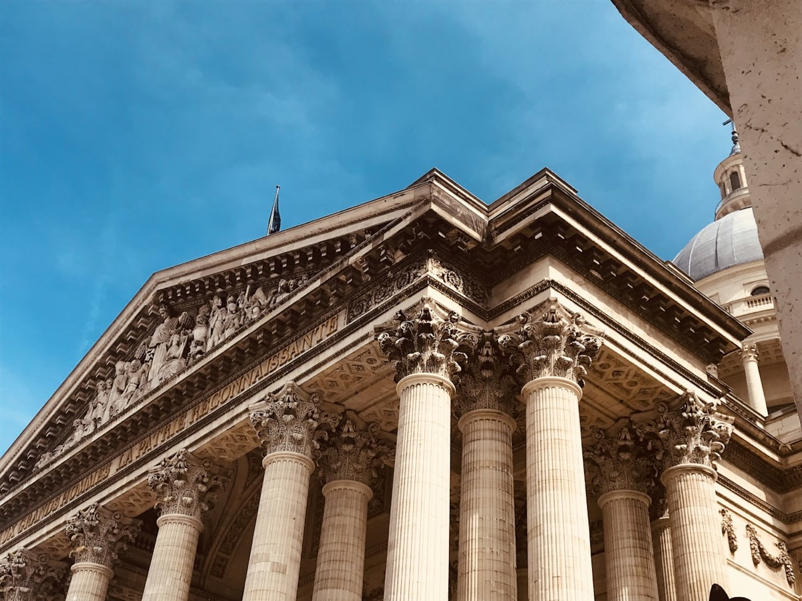
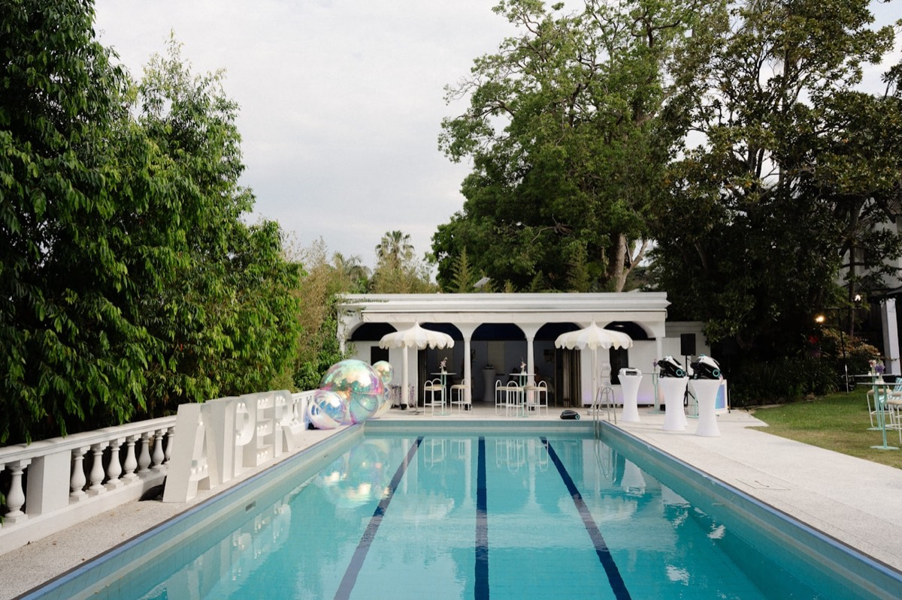
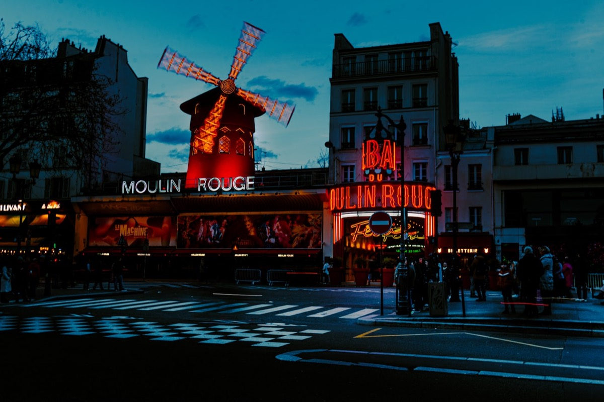
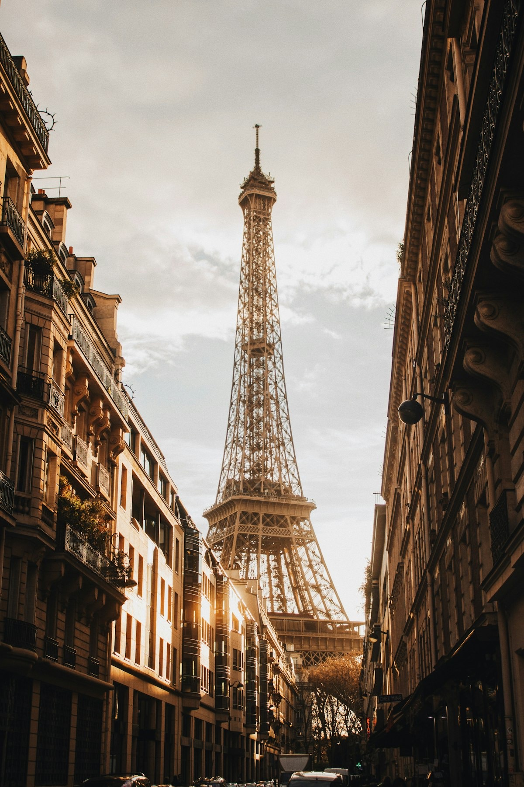
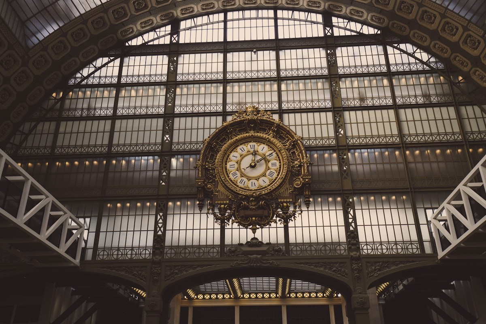
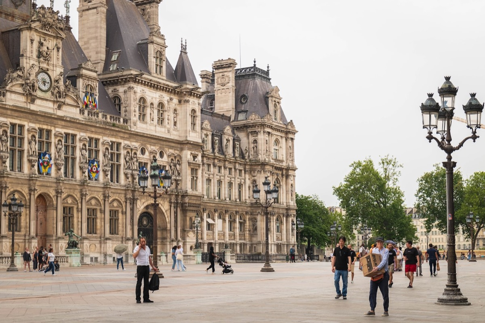
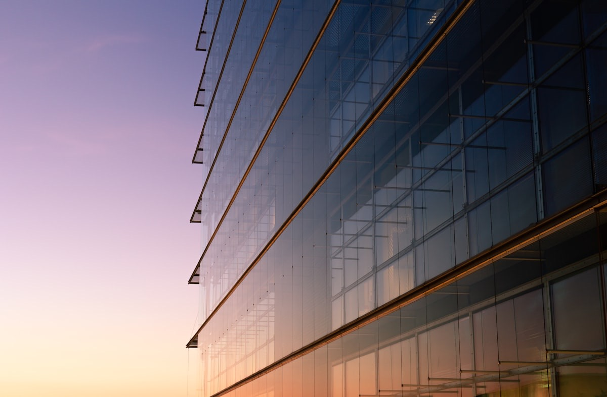

The Louvre Pyramid

There is a before and an after the first time you step under the Pyramid on a gala night, when the Louvre's lights bounce off the glass and Paris seems to have been built just for that moment. It is, quite simply, the most prestigious address in the world for an event. And we don't say that lightly.
The logistics match the setting: museum security constraints, access via the Carrousel, coordination with the RMN-GP, tightly controlled build times. In short, this is not a venue you "book": it is a venue you earn, brief by brief. At Dare-Dare, we had that privilege for Paris Blockchain Week, producing a gala dinner for 600 guests under the Pyramid. The set design played on the transparency of the glass and the golden stone of the Cour Napoléon. The effect? Standing ovations before the first speech.
Palais Brongniart

The former Paris Stock Exchange has become one of the most versatile event venues in the city. Corinthian columns, a majestic nave, intimate side salons: the Palais Brongniart offers a rare range. It can host a 200-person tech launch in the salon d'honneur or a 2,000-delegate congress in the great nave.
What we love most is the scenographic freedom. The volumes allow ambitious staging without crushing the architecture. We lived it from the inside during an activation for Moët & Chandon produced by Dare-Dare: an immersive set that turned the nave into a Champagne vineyard, with architectural mapping on the columns and a suspended champagne bar. The Palais has a unique knack for reinventing itself at every event while instantly asserting its grandeur. It is the venue for first impressions that land.
Piscine Molitor

Piscine Molitor, Paris. Photo: Bretwa, CC BY-SA 4.0, via Wikimedia Commons.
If Instagram had a physical address, it would be Molitor. The Art Deco cabins, the winter pool with its multicoloured stained glass, the rooftop overlooking Roland-Garros: every angle is content ready to post. It is the perfect playground for influencer activations, lifestyle product launches and parties where the set design has to be social-media native.
We know Molitor by heart: its acoustic quirks (the pool echoes), its guest flows (you go through the spa, careful), its golden hours (5pm to 6.30pm in summer on the outdoor pool). For the Samsung Influences activations produced by Dare-Dare, we used the winter pool as a giant studio, with interactive installations in every cabin and an immersive photocall by the water. The result: an engagement rate three times the industry benchmarks. Molitor is your guarantee that guests become ambassadors.
The Ritz Paris

The Ritz is the anti-volume venue. Here, you don't impress with size but with density: every detail, from the fold of the tablecloth to the weight of the menu card, tells a story of perfection. For a VIP breakfast, a C-level networking dinner or a confidential board meeting, there is simply no finer setting in Paris.
The Salon Proust, the Salon Psyché, the inner gardens: each space has its own personality and capacity. We favour the Salon César for 50 to 80 guests, with a walking dinner that lets people move between rooms. For the Paris Blockchain Week VIP networking produced by Dare-Dare, we hosted an exclusive breakfast there for 120 Web3 decision-makers. The conversation lived up to the venue: intimate, decisive, memorable. The Ritz creates an instant sense of belonging: from the doorway, your guests know they are part of a circle.
Carrousel du Louvre

When the brief says "big", the Carrousel du Louvre says "XXL". With 10,000 m² of modular space beneath the Inverted Pyramid, it is the venue for events that think in thousands. Trade shows, company conventions, international congresses: the Carrousel delivers world-class technical infrastructure while keeping the most iconic address in Paris.
But be warned: big doesn't mean easy. The Carrousel's modularity is both an asset and a trap. Handled badly, the space can feel cold, impersonal, "trade-show" in the wrong sense. It all comes down to zoning, signage and the design of the in-between spaces. We know because we have done it at maximum scale: for Deloitte, Dare-Dare produced an event bringing together 20,000 people at the Carrousel. Crowd flows, zoned experiences, large-scale catering: a logistical challenge turned into a seamless experience. The Carrousel is where ambition meets execution.
Moulin Rouge

Forget the tourist cliché. A private hire of the Moulin Rouge is a different experience altogether. The legendary hall becomes an exclusive cabaret where your guests are the audience of a show created for them. The red sails, the stage, the balconies: everything breathes celebration, glamour and daring. It is the venue for parties people are still talking about six months later.
Private hire opens up options few people suspect: a customised show, corporate content woven into the revue, dinner-show with a bespoke menu, backstage access for VIPs. For the Paris Blockchain Week party, Dare-Dare took over the Moulin Rouge and orchestrated a night for 600 guests mixing show, DJ set and networking. The French Cancan opened the evening, but it was the after-party on stage that set social media alight. The Moulin Rouge is your permission to party, with panache.
Eiffel Tower (private salons)

Hosting an event in the Eiffel Tower is the dream of many clients, and the logistical nightmare of many producers. The Gustave Eiffel salons, on the first floor, offer a panoramic view over the Trocadéro and the Champ-de-Mars that takes your breath away, even for the most jaded Parisians. It is the "signature" address par excellence, the one that makes the cover of annual reports.
But let's be honest: the Eiffel Tower is the most demanding venue on this list. Security files due months in advance, strictly controlled equipment access, no goods lift for bulky sets, a noise curfew, no-fly zones for drones. Every event is a near-military operation. That is exactly why you need an experienced producer who knows the SETE contacts, the administrative lead times and the creative workarounds to operate within the constraints. When everything is under control, the result is truly unforgettable.
Musée d'Orsay

Picture a gala dinner beneath the great glass roof of the former Orsay railway station, Renoirs and Monets lit in the background, twilight filtering through the great clock. The Musée d'Orsay may be the most emotionally powerful venue in Paris for an event. The art isn't a backdrop: it is the backdrop.
The central nave, 138 metres long and 32 metres high under glass, can host up to 1,500 people for a cocktail reception. The side galleries create natural networking spaces, where conversations happen between a Cézanne and a Van Gogh. The main challenge is acoustic: the nave's reverberation calls for professional sound treatment for speeches and music. We also recommend bespoke lighting that respects conservation standards while showing off the architecture. It is a venue that asks for respect and finesse, and repays that care a hundredfold.
Hôtel de Ville

The square in front of the Hôtel de Ville is the largest open-air "stage" in central Paris. An ice rink in winter, a giant screen during major sporting events, free concerts in summer: it is the part of the city that speaks to everyone. For brands that want to reach the general public in an institutional setting, there is no equivalent.
Inside, the state rooms (Salon des Arcades, Salle des Fêtes, Salon des Lettres) rival Versailles for gilding and grandeur. But for public activations, the magic happens outside, on the square. Dare-Dare proved it with the Samsung × Fnac Live activation: an immersive open-air experience that drew thousands of visitors over several days, combining concerts, product demos and interactive spaces. The Hôtel de Ville offers an institutional legitimacy few venues can claim, plus natural footfall any marketing director would dream of.
Fondation Louis Vuitton

Frank Gehry's glass vessel, set in the heart of the Bois de Boulogne, is an architectural gesture so radical it turns any event into a sensory experience. Glass sails, suspended terraces, pools of water: everything here is movement, light and surprise. It is the venue for brands that want to tie their image to creative daring and contemporary luxury.
Spaces for hire include the auditorium (350 seats), the exhibition galleries and the panoramic terraces overlooking the Jardin d'Acclimatation and the La Défense skyline. The holy grail is the top-floor terrace at sunset: a moment of pure grace. The Fondation sets strict set-design rules (nothing may alter the architecture), but that constraint is really a gift: it forces restraint, and restraint in such an expressive place produces spectacular results. It is where we send clients who want to make an impression without ever overdoing it.